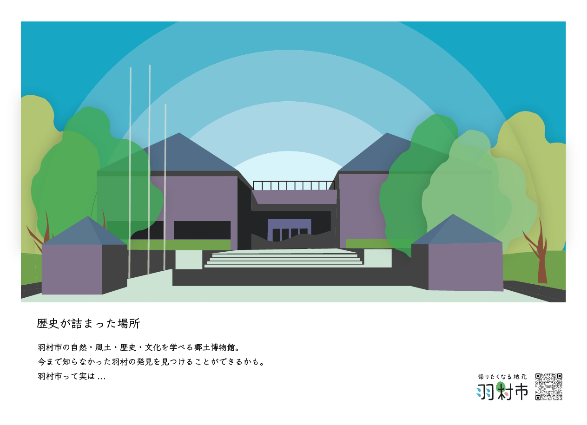

はじめに
ギャラリー
お知らせ
お知らせ
お知らせ
トップページへ戻る
歴史の詰まった場所

羽村市郷土博物館
1985年4月に開館し、市民の文化的想像を育む”学び”の場として活動してきました。
羽村市の自然・風土・歴史・文化に関して、資料の収集や保存、調査研究を行い
その結果を、展示や学習会、資料の刊行等、各種事業を通じて公開しています。
羽村と水はどのように関わっているのか、歴史とともに発見があるはずです。
©︎帰りたくなる地元、羽村市